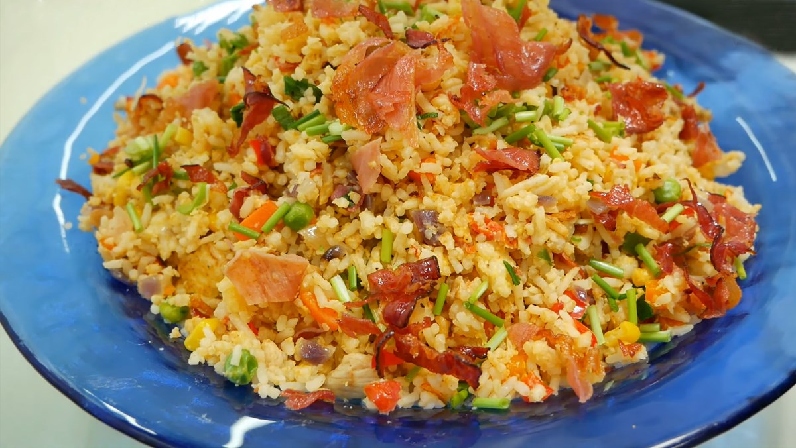

God Tier Fried Rice

Description
Fried rice can be found in many cuisines around the world. But they are most widely
found in Asian cultures such as: Vietnam, China, Japan, Thailand, etc..
Mainly because rice is one of the most vital source of carbohydrates in
our daily life.
Ingredients
Main Ingredients:
- Rice - 500 grams
- Chinese Sausage - 1 Sausage
- Egg - 2 Eggs
- Scallions - As much as you want
- Protein of your choice (Chicken, Beef, etc)
- Cooking oil - 1 tbsp
- Magic powder (MSG) - 2 tbsp
- Soy sauce - 1 tbsp
Others (Optional):
- Diced Carrots - 50 grams
- Peas/Green beans - 50 grams
- Black pepper